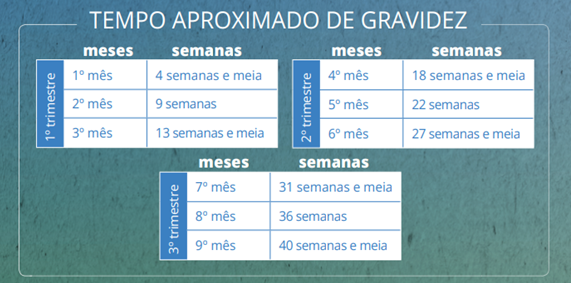
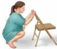

Carregando...
{{ titulo }}
{{ sub_titulo }}
IDADE GESTACIONAL

Caderneta da Gestante – Ministério da Saúde/2022
{{ idade_gestacional }}
DILATAÇÃO DO COLO DO ÚTERO
1 cm
2 cm
3 cm
4 cm
5 cm
6 cm
7 cm
8 cm
9 cm
10 cm
{{ dilatacao_do_colo_do_utero }}
SINAIS E SINTOMAS NATURAIS ESPERADOS
{{ sinais_e_sintomas_naturais_esperados }}
ALTERAÇÕES EMOCIONAIS NA MÃE
{{ alter_aco_es_emocionais_na_mae }}
AJUDA DO ACOMPANHANTE
{{ ajuda_do_acompanhante }}
A MÃE DEVE SE ALIMENTAR BEM
{{ a_mae_deve_se_alimentar_bem }}
ALGUMAS POSIÇÕES DURANTE O TRABALHO DE PARTO

{{algumas_posicoes_durante_o_trabalho_de_parto}}
AMAMENTAÇÃO
{{amamentacao_1}}
CONTATO PELE A PELE
{{contato_pele_a_pele}}